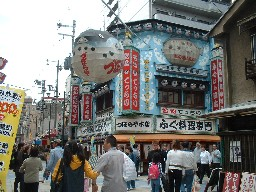
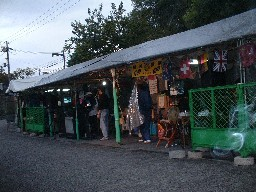
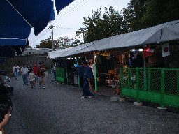
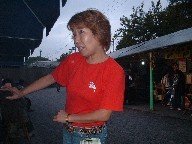

警察の面通しがさっさと済んだので、大阪の知人に連絡した。
「おお、久しぶりだ。ぜひ会おう」
「どこで待ち合わせしようか」と云うと、
「通天閣近くにいるなら、その近くにずぼらやという店がある。そこの前で会おうか」という。
「分かった」と云って電話を切り、少し探すとすぐあった。
（おお、これがあの有名なずぼらやか）

知人と会ったあと、せっかくだからとずぼらやで食事。その後、他の用事があったので、地下鉄で移動することにした。もよりの地下鉄の駅は天王寺駅。そこまで行くのに、天王寺動物園の横を通る。ぶらぶら動物園の横を歩いてゆくと、なんだか屋台のテント村のようなものがみえる。

ナゴヤの表通りは広小路という。むかしはそこに屋台の居酒屋があった。ナゴヤの屋台は規制で無くなってしまったが、大阪はまだ残っているのかと思った。しかしまだ夕方の４時頃。（屋台がテントを張るにはちと早い感じだが....見るとどこのテントにもカラオケの機器が並んでいる。よく見ると、ちゃんと「１曲200円」とか書いてある。
（へえ〜、カラオケ店なんだ....）と思いながら見ていると、或る店でお客だか店員だか唄いだした。すると近くにいた着物姿の男性が傘を手に持ち、唄に合わせて踊り出した。

面白いので立ち止まって見ていた。すると男性のあとで、今度は赤い服を着た女性が踊り出した。おや、面白い）と思って見ていると、その女性が踊りながらσ(-_-)の近くに来た。そして踊りながら、σ(-_-)の手に持っているデジカメを指さし、（自分を撮れ）という仕草をする。
なんだか悪いような気がして遠慮したが、さらに撮れという仕草をする。そこで撮ったのがこの写真（撮れ撮れと云ったんだからupしても許してくれるだろう。(^-^；

いやあ、さすがは大阪と、いたく感心しながら天王寺を後にした。
|